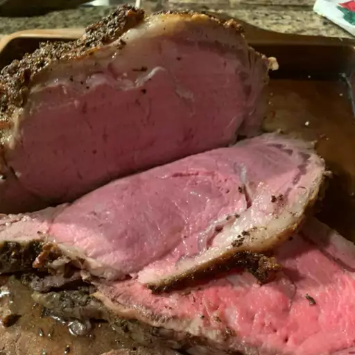

A prime rib dinner is perfect for Christmas or other special occasions. This recipe includes a mustard and horseradish crust on the beef and gives you the perfect roasting time.
The day before serving, remove the roast from the package and dry thoroughly with paper towels. Set roast on a baking sheet, and place in refrigerator overnight. Remove from refrigerator 1 hour before cooking to allow meat to reach room temperature. Rub the roast all over with horseradish and Dijon mustard. Mix kosher salt, black pepper, thyme, and garlic powder together in small bowl; sprinkle over the roast.
Preheat the oven to 450 degrees F (230 degrees C). Place celery, carrot, and onion into the bottom of a roasting pan; place the roast on top.